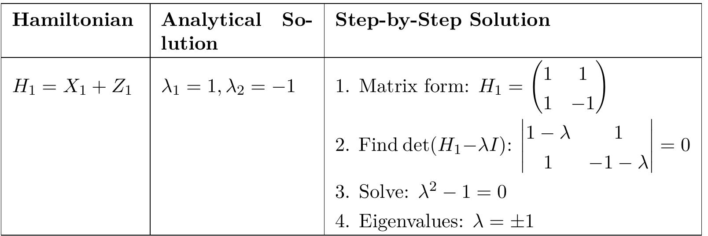

⟨QuantumLLMInstruct⟩ Automating Quantum Circuit Design with Large Language Models (LLMs) using Trotter-Suzuki Decomposition.
Paper Code
QuantumLLMInstruct (QLMMI) automates the translation of Hamiltonians into operational quantum circuits, tackling intricate quantum tasks with symbolic and numerical manipulations. By leveraging reasoning frameworks such as Chain of Thought (CoT) and Task-Oriented Reasoning and Action (ToRA), the dataset aims to bridge the gap between theory and practical quantum circuit synthesis.
1 Phase 1: Synthetic Hamiltonians are programmatically generated, offering both analytical solutions and physical properties like eigenvalues and Trotter-Suzuki decompositions.
2 Phase 2: The dataset is enriched using CoT and ToRA methodologies to break down complex quantum problems into stepwise processes, enhancing the LLMs' reasoning abilities.
3 Phase 3: The enriched dataset is verified through an ensemble of LLMs, employing self-critique mechanisms and CoT methodologies to ensure the accuracy of quantum circuit generation.
QuantumLLMInstruct (QLMMI) is a groundbreaking dataset designed to enhance Large Language Models (LLMs) in automating quantum circuit synthesis.
By integrating Chain of Thought (CoT) and Task-Oriented Reasoning and Action (ToRA) frameworks with advanced computational tools,
QLMMI facilitates symbolic manipulation of Hamiltonians and their translation into practical quantum circuits via Trotter-Suzuki
decompositions and Quantum Assembly Language (QASM) code. The dataset is structured to support future exploration into the efficacy
of these reasoning frameworks in automating complex quantum tasks.

Phase 1: Synthetic Hamiltonians are programmatically generated, offering both analytical solutions and physical properties like eigenvalues and Trotter-Suzuki decompositions.
Phase 2: The dataset is enriched using CoT and ToRA to break down complex quantum problems into stepwise processes, enhancing the LLMs’ reasoning abilities.
Phase 3: The enriched dataset is verified through an ensemble of LLMs, using self-critique and CoT methodologies to ensure the accuracy of quantum circuit generation.
Our next steps involve fine-tuning models like Qwen-2.5-math and Llama3.1-8B-Instruct on the QLMMI dataset to evaluate their effectiveness in automating quantum circuit synthesis. We anticipate that QuantumLLMInstruct will significantly contribute to the development of efficient and precise quantum circuits.
@misc{sk2025QuantumLLMInstruct,
title={QuantumLLMInstruct: Automating Quantum Circuit Design with LLMs and Trotter-Suzuki Decomposition.},
author={Shlomo Kashani},
year={2025},
eprint={},
archivePrefix={arXiv},
primaryClass={}
}